Tyrannosaurus Rex "Sue"
O T-Rex mais completo já encontrado (90% dos ossos). Mede 12,8 m. Está exposto no Field Museum de Chicago.
Uma jornada por entre as criaturas mais impressionantes da criação de Deus que já caminharam sobre a Terra.
A palavra "dinossauro" vem do grego deinos ("terrível", "espantoso", "maravilhoso") e sauros ("lagarto"). Literalmente: "lagarto terrível" — um nome que captura tanto o tamanho assombroso quanto a majestade dessas criaturas.
O termo foi cunhado em 1842 pelo paleontólogo e anatomista britânico Sir Richard Owen, ao perceber que ossos gigantes encontrados na Inglaterra pertenciam a um grupo distinto de répteis, diferente de qualquer animal vivo conhecido.
Curiosamente, antes do termo "dinossauro", a Bíblia já descrevia criaturas espantosas como o Beemote (Jó 40) e o Leviatã (Jó 41) — descrições que muitos criacionistas identificam como dinossauros e répteis marinhos.
"Contemplas agora o beemote, que eu fiz contigo, que come a erva como o boi. Eis que a sua força está nos seus lombos, e o seu poder nos músculos do seu ventre. Quando quer, move a sua cauda como cedro; os nervos das suas coxas estão entretecidos." JÓ 40:15-17 (ACF)
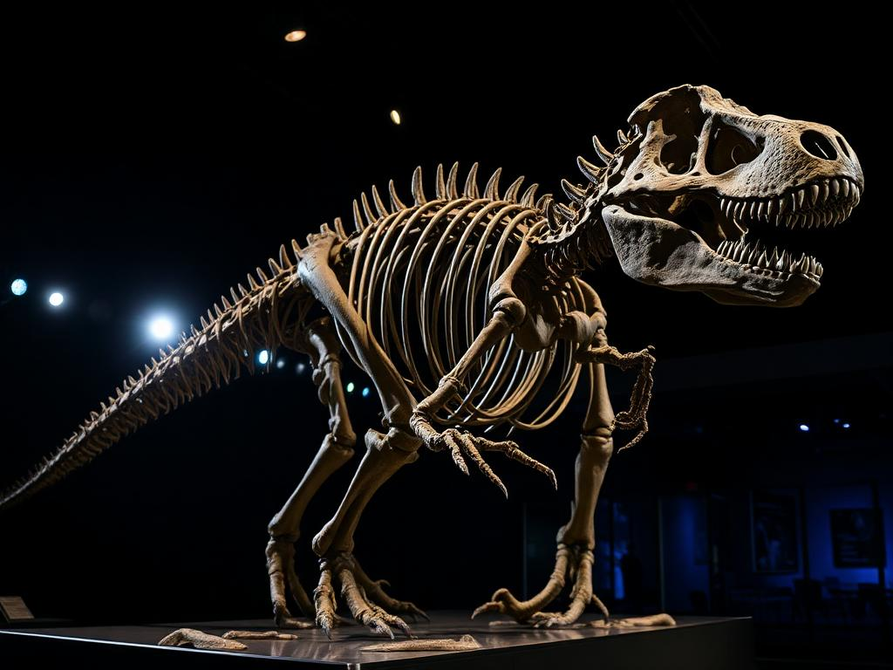
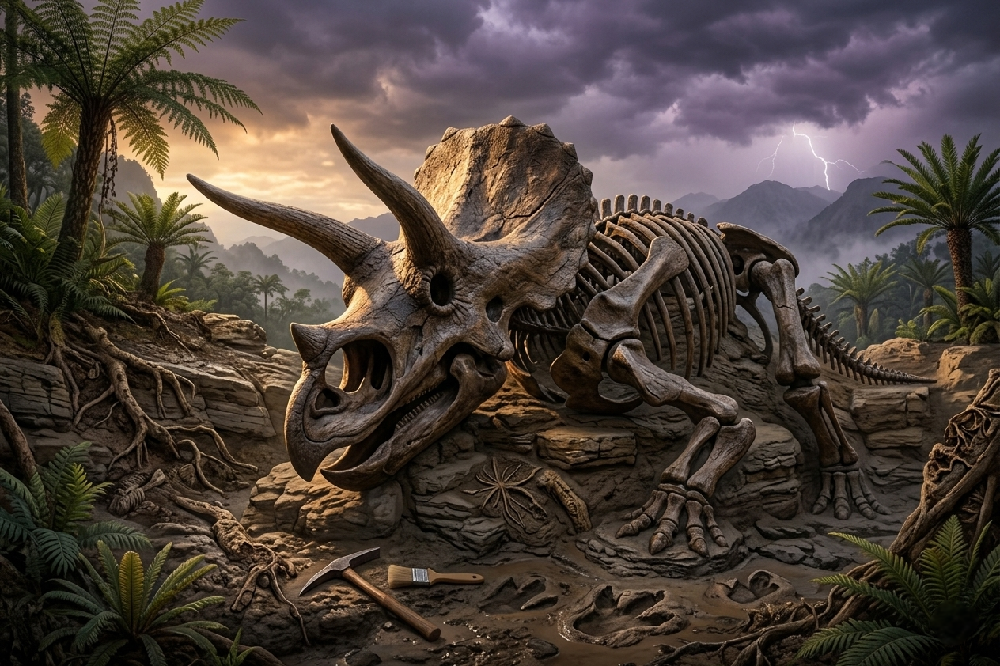
Embora ninguém vivo hoje tenha visto um dinossauro caminhando, a evidência da sua existência é abundante e tangível:
Segundo a teoria evolucionista, os dinossauros teriam surgido há aproximadamente 230 milhões de anos, no período Triássico, evoluindo gradualmente a partir de répteis primitivos chamados arcossauros. Eles teriam dominado a Terra por cerca de 165 milhões de anos.
A teoria mais aceita pelos evolucionistas é a do impacto de um asteroide em Chicxulub (México), há 66 milhões de anos, causando inverno global, escuridão e fim da cadeia alimentar. Outras hipóteses incluem vulcanismo intenso e mudanças climáticas.
Os criacionistas creem que os dinossauros foram criados por Deus no sexto dia da Criação, juntamente com todos os outros animais terrestres, há cerca de 6.000 anos. Viviam em harmonia com o homem antes da queda — eram herbívoros no Éden original (Gn 1:30).
A maior parte dos dinossauros teria perecido no Dilúvio Universal nos dias de Noé (Gn 7), o que explica os imensos depósitos fósseis ao redor do mundo. Os pares preservados na Arca teriam saído após o dilúvio, mas a Terra mudada — clima, alimento, predadores — levou ao seu progressivo desaparecimento.
A maneira como os fósseis de dinossauros estão preservados é, para os criacionistas, um testemunho silencioso de uma catástrofe global e súbita — exatamente o tipo de evento descrito em Gênesis 7.
Principais evidências:
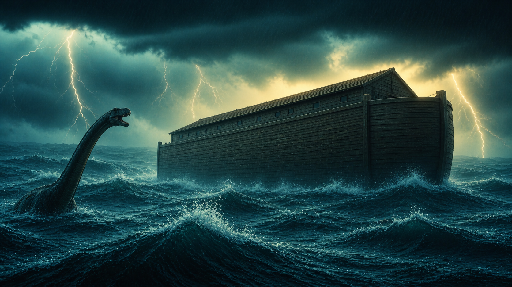
"E disse Deus: Produzam as águas abundantemente répteis de alma vivente; [...] E Deus criou as grandes baleias, e todo o réptil de alma vivente que as águas abundantemente produziram conforme as suas espécies; [...]"
"E disse Deus: Produza a terra alma vivente conforme a sua espécie; gado, e répteis e feras da terra conforme a sua espécie; e assim foi. E fez Deus [...] todo o réptil da terra conforme a sua espécie; e viu Deus que era bom."
"Contemplas agora o beemote, que eu fiz contigo, que come a erva como o boi. Eis que a sua força está nos seus lombos, [...] Quando quer, move a sua cauda como cedro; [...] Os seus ossos são como tubos de bronze; a sua ossada é como barras de ferro."
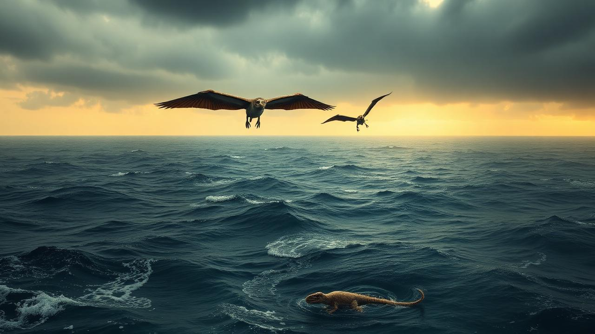
Apesar de viverem na mesma época e serem todos répteis grandes e impressionantes, os dinossauros são definidos por características anatômicas específicas: viviam em terra firme, andavam com as pernas posicionadas verticalmente sob o corpo (como mamíferos, e não com as pernas para os lados como crocodilos), e possuíam estrutura de quadril particular (saurísquia ou ornitísquia).
Répteis marinhos e voadores não compartilham essas características — pertencem a grupos distintos.
🌊 Répteis marinhos (não-dinossauros):
Répteis voadores (não-dinossauros):
Os dinossauros eram ovíparos — nasciam de ovos, assim como os répteis e as aves modernas. As fêmeas construíam ninhos no solo, frequentemente em colônias, e algumas espécies (como o Maiasaura — "mãe boa réptil") cuidavam dos filhotes após o nascimento.
A comprovação mais marcante veio em 1923, quando uma expedição do Museu Americano de História Natural, liderada pelo paleontólogo Roy Chapman Andrews, descobriu no Deserto de Gobi (Mongólia) os primeiros ninhos com ovos fossilizados de dinossauro — pertencentes ao Protoceratops (e mais tarde reidentificados como do Oviraptor). Foi a prova definitiva de que esses animais botavam ovos.
Desde então, ovos fósseis foram encontrados em vários lugares do mundo, inclusive no Brasil, no Triângulo Mineiro.
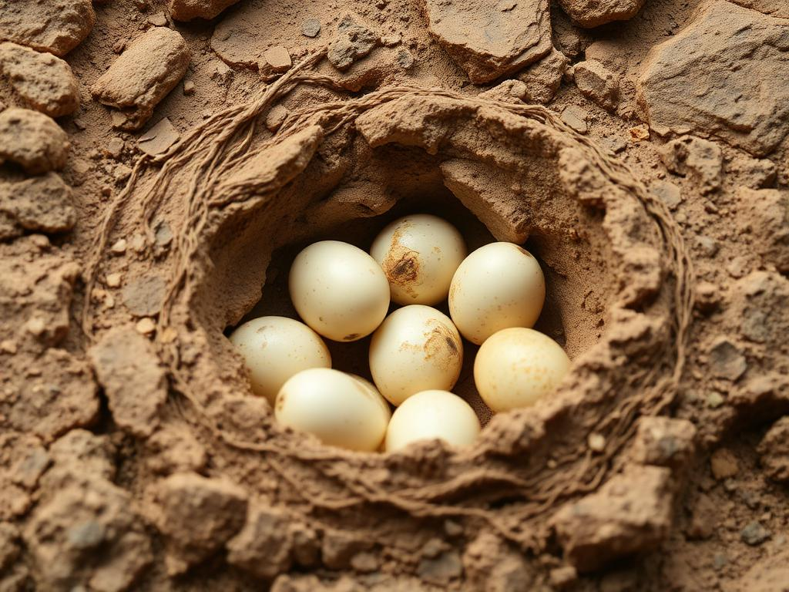
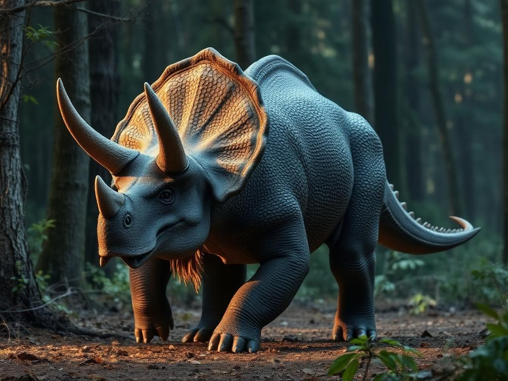
Graças a impressões fossilizadas raras, sabemos que a pele dos dinossauros era escamosa, semelhante à dos répteis atuais, mas frequentemente com escamas pequenas, justapostas e arranjadas em padrões — algumas vezes com placas ósseas (osteodermas) embutidas, como uma armadura.
A textura variava: alguns tinham pele lisa e granulada como a de um lagarto-monitor, outros possuíam cristas, espinhos ou placas dorsais. Estudos recentes sugerem que certos terópodes pequenos podiam ter penas ou estruturas semelhantes a penas, embora isso seja debatido.
Sobre as cores: análises de melanossomas (estruturas que continham pigmento) em alguns fósseis indicam tons de marrom, ferrugem, cinza e até listras — embora muitas reconstruções sejam artísticas e especulativas.
Cada grupo reúne dinossauros (e répteis pré-históricos) com características anatômicas e modos de vida semelhantes.
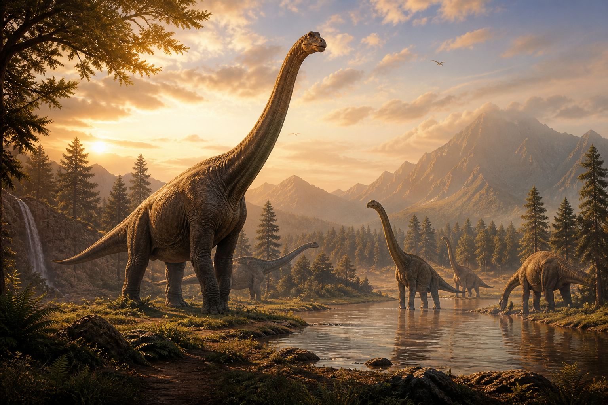
Os colossais herbívoros de pescoço e cauda longos, cabeça pequena e quatro patas grossas como pilares. Os maiores animais terrestres que já existiram.
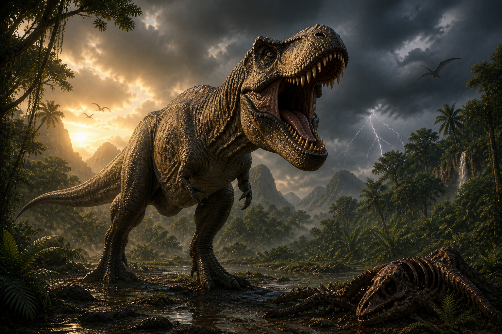
Dinossauros bípedes carnívoros, com membros anteriores curtos, garras afiadas e dentes serrilhados. Inclui os maiores predadores da história.
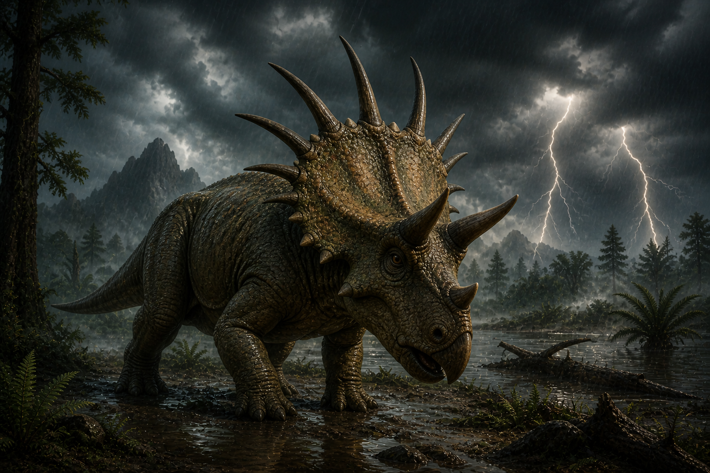
Herbívoros quadrúpedes com chifres no rosto e um grande escudo ósseo (frill) protegendo o pescoço. Bico curvo semelhante ao de papagaio.
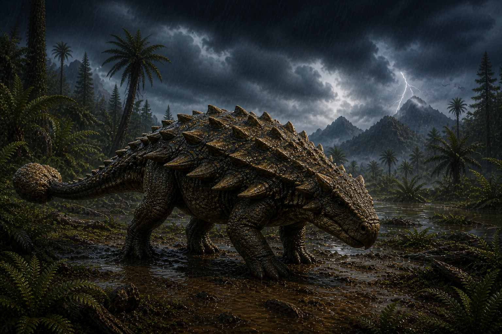
Os "tanques de guerra" do mundo dos dinossauros — corpo baixo, recoberto de placas ósseas e espinhos, com uma poderosa maça óssea na ponta da cauda.
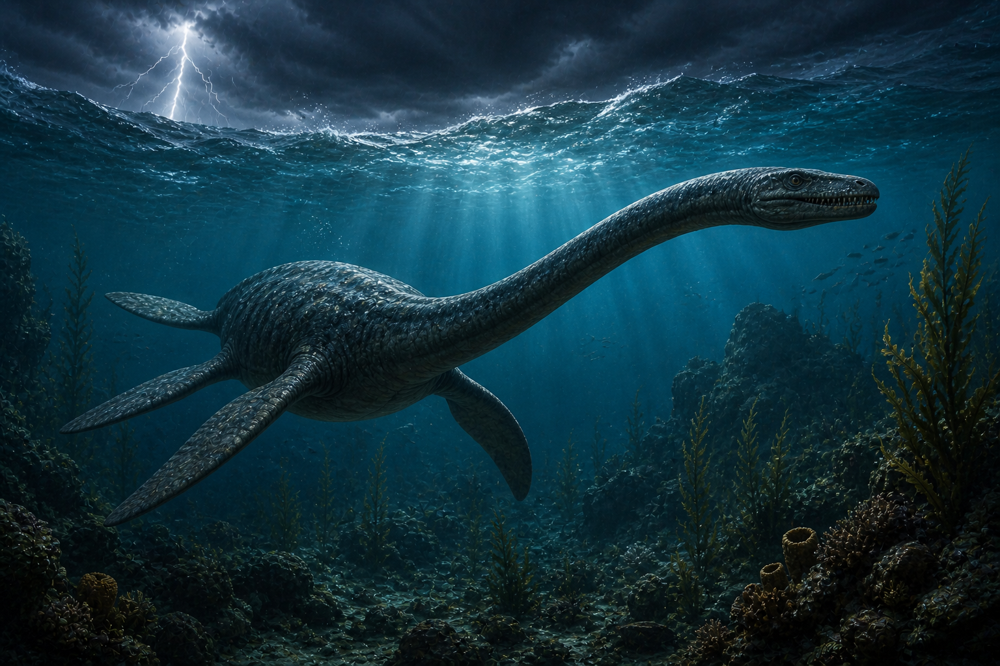
Não eram dinossauros — eram répteis aquáticos com corpo largo, quatro nadadeiras em forma de remo e pescoço extremamente longo (em algumas espécies).
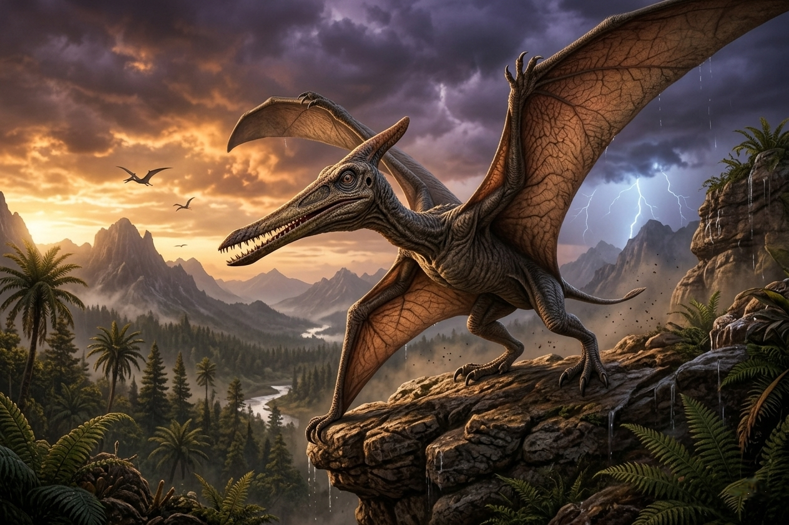
Também não eram dinossauros — foram os primeiros vertebrados a voar. Tinham asas formadas por uma membrana de pele esticada entre o corpo e um dedo enormemente alongado.
Os sauropodomorfos ("formas com pés de lagarto") foram um grande grupo de dinossauros herbívoros caracterizados por pescoço longo, cabeça pequena e cauda comprida. Foram alguns dos primeiros dinossauros a se diversificar e incluem os maiores animais terrestres já existentes.
Eles se dividem em 2 grupos principais:
Os mais antigos e relativamente menores. Eram bípedes ou semi-bípedes, com pescoço já alongado mas ainda flexível. Ex.: Plateosaurus, Massospondylus, Riojasaurus.
Os gigantes verdadeiros. Quadrúpedes obrigatórios, podiam atingir mais de 30 metros de comprimento e mais de 70 toneladas. Ex.: Brachiosaurus, Diplodocus, Argentinosaurus.
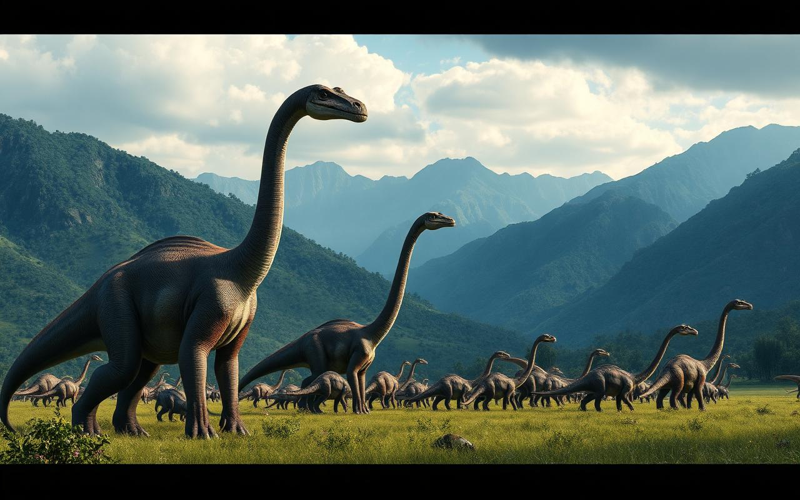
Antes da queda do homem, todos os animais eram herbívoros (Gn 1:30). Após o pecado, surgiu o ciclo predador-presa dos animais, incluindo os dinossauros.
Quem está no topo? O Tyrannosaurus Rex é apontado como o rei da cadeia alimentar terrestre. Por quê? Por sua combinação única de tamanho colossal (até 12 m de comprimento), mandíbulas devastadoras com a mais forte mordida já medida em um animal terrestre, visão binocular aguçada, audição refinada e ausência de predadores naturais em seu habitat. Era, em todos os sentidos, o ápice — o "rei dos dinossauros".
O Tyrannosaurus Rex, cujo nome significa "lagarto tirano rei", é considerado o rei dos dinossauros — não apenas pelo tamanho, mas por seu domínio absoluto sobre o ecossistema em que vivia. Seus fósseis foram encontrados principalmente na América do Norte, em estados como Montana, Dakota do Sul e Wyoming (EUA), bem como no Canadá. O primeiro esqueleto significativo foi descoberto por Barnum Brown em 1902, em Montana.
Um T-Rex adulto media entre 12 e 13 metros de comprimento, alcançava cerca de 4 metros de altura no quadril e pesava entre 7 e 9 toneladas. Possuía cerca de 60 dentes serrilhados, alguns com até 20 cm de comprimento — projetados não para cortar, mas para esmagar ossos. Sua mordida era a mais forte já registrada em um animal terrestre: estima-se uma pressão de cerca de 6 toneladas por dente.
Apesar dos seus famosos braços minúsculos (com apenas dois dedos), eram surpreendentemente fortes — possivelmente usados para segurar presas durante o ataque. O T-Rex possuía visão binocular excelente (melhor que a de um falcão moderno), olfato extremamente apurado e ouvidos sensíveis a baixas frequências. Era um caçador formidável e provavelmente também necrófago oportunista.
Hábitos: caçava sozinho ou possivelmente em pequenos grupos familiares, predando hadrossauros, ceratopsianos e até saurópodes jovens. Vivia em florestas costeiras úmidas, ricas em rios e vegetação. Provavelmente se reproduzia botando ovos em ninhos protegidos. Estima-se que vivia entre 28 e 30 anos.
Curiosidade: em 2005, a paleontóloga Mary Schweitzer encontrou tecidos moles e vasos sanguíneos preservados em um osso de T-Rex — algo que, segundo o modelo evolucionista, seria impossível após 65 milhões de anos. Para os criacionistas, isso é uma evidência poderosa de que esses ossos têm milhares de anos, não milhões.
Cada um destes esqueletos contou uma parte da história desses gigantes do passado.
O T-Rex mais completo já encontrado (90% dos ossos). Mede 12,8 m. Está exposto no Field Museum de Chicago.
Um dos maiores dinossauros conhecidos. Estimativa: 35 m de comprimento e 70-100 toneladas.
Com 2,5 metros de altura e 7 metros de comprimento, estima-se que o dinossauro pesasse cerca de mil quilos e que estava quase 90% completo.
"Tanque blindado" pré-histórico. Couraça óssea e cauda em forma de maça.
Pequeno terópode (1,8 m) ágil, de garras afiadas. Provavelmente coberto de penas.
Réptil marinho de pescoço longo descoberto por Mary Anning. Não é dinossauro.
Primeira descoberta de ninhos com ovos fossilizados, por Roy Chapman Andrews.
Maior terópode conhecido (até 15 m). Possuía vela dorsal e hábitos semi-aquáticos.
Saurópode com patas dianteiras maiores que as traseiras. Cerca de 25 m de comprimento.
Um dos primeiros dinossauros a serem cientificamente nomeados. Famoso pelo "polegar-espinho".
Foram encontrados no Brasil mais de 30 espécies, principalmente em Minas Gerais, São Paulo e Rio Grande do Sul. O Staurikosaurus pricei é um dos dinossauros mais antigos do mundo!
Os maiores ovos de dinossauro encontrados pertencem aos saurópodes, com cerca de 30 cm de diâmetro — surpreendentemente pequenos para animais tão imensos.
Lendas de dragões em culturas chinesa, europeia, mesoamericana e africana podem ser memórias antigas de encontros entre humanos e dinossauros sobreviventes do dilúvio.
Em 2005, a Dra. Mary Schweitzer encontrou tecido mole, vasos sanguíneos e proteínas em um osso de T-Rex — uma descoberta que abala o relógio "milhões de anos".
Segundo Gênesis 1:30, antes da queda todos os animais — incluindo o T-Rex — comiam apenas plantas. Os dentes afiados não significam dieta carnívora original (ex.: panda).
As descrições de Jó 40 e 41 são impressionantemente compatíveis com saurópodes (Beemote) e répteis marinhos como o Mosassauro ou Kronosauro (Leviatã).